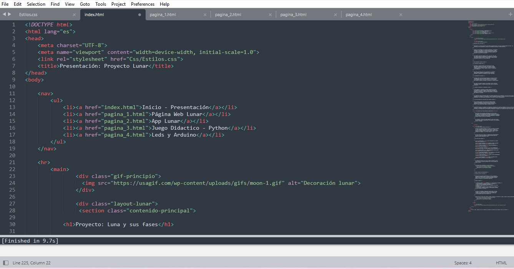
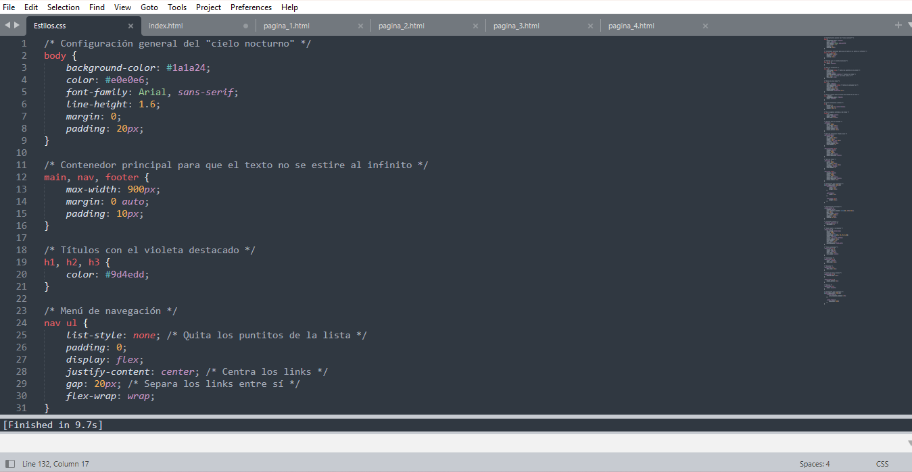

La realización de la página web
En esta sección se explica cómo se creó la página web del proyecto "Luna y sus fases", qué lenguajes se utilizaron y cómo se organizó su estructura.
1. HTML y CSS: los pilares de la página web
Para construir una página web se pueden utilizar diferentes lenguajes y herramientas. En este proyecto se utilizaron HTML y CSS, que cumplen funciones diferentes, pero trabajan juntos para crear el resultado que vemos en el navegador.
HTML: la estructura y el contenido
HTML es el lenguaje que organiza los elementos de la página, como los títulos, los párrafos, las imágenes y los enlaces. Se puede comparar con la estructura de una casa: determina dónde se encuentra cada parte y qué función cumple.
CSS: la apariencia visual
CSS se encarga de definir cómo se ven los elementos creados con HTML. Permite establecer los colores, los tamaños de letra, los espacios, la alineación y otros detalles visuales. En este proyecto se utiliza para mantener una apariencia uniforme en todas las páginas.
Finalmente, el navegador lee el HTML, aplica los estilos del CSS y muestra el resultado en pantalla. En pocas palabras: HTML organiza el contenido, CSS le da estilo y el navegador combina ambos.
2. Organización de las cinco páginas
El sitio web "Luna y sus fases" está compuesto por cinco archivos HTML: index.html, pagina_1.html, pagina_2.html, pagina_3.html y pagina_4.html. Cada uno representa una página diferente dentro del mismo proyecto.
El archivo index.html funciona como página principal o portada. Desde allí, al igual que desde las demás páginas, se puede utilizar el menú para acceder a las otras secciones.
Aunque cada página desarrolla su propio contenido, todas comparten una estructura similar: un menú de navegación, una zona principal para la información y un pie de página.
Esta organización permite dividir el proyecto en temas sin necesidad de colocar toda la información en una única página. Así, el sitio resulta más ordenado y sencillo de recorrer.
3. ¿Cómo está construido el HTML?
El HTML utiliza etiquetas para indicar qué tipo de elemento se quiere mostrar. Muchas etiquetas tienen una apertura y un cierre, y el contenido se coloca entre ambos.
Por ejemplo, la etiqueta h1 se utiliza para el título principal, mientras que p permite escribir un párrafo:
<h1>La realización de la página web</h1>
<p>Este es un párrafo de ejemplo.</p>El navegador interpreta estas etiquetas y presenta el título y el párrafo de acuerdo con los estilos correspondientes.
Las partes principales del documento
- head: contiene información sobre el documento, como el título de la pestaña y la conexión con el CSS.
- body: contiene los elementos que forman la página visible, como el menú, los textos y el pie.
- nav: identifica la zona destinada al menú de navegación.
- main: contiene la información principal y específica de cada página.
- footer: contiene información complementaria situada al final, como la identificación del proyecto.
Cómo se conectan las páginas
Para navegar entre los archivos se utilizan enlaces creados con la etiqueta a. El atributo href indica qué archivo se abrirá cuando la persona pulse una opción.
<a href="pagina_2.html">App Lunar</a>En este ejemplo, al pulsar "App Lunar", el navegador abre el archivo pagina_2.html. El mismo principio se utiliza en las cinco opciones del menú.
4. ¿Cómo se aplica el CSS?
El CSS utiliza reglas para indicar qué elementos deben recibir determinados estilos. Cada regla tiene un selector, que identifica los elementos afectados, y propiedades que establecen su apariencia.
Por ejemplo, la siguiente regla establece el fondo oscuro y el color claro del texto:
body {
background-color: #1a1a24;
color: #e0e0e6;
}En este caso, background-color establece el color de fondo, mientras que color define el color del texto. Los códigos que comienzan con # representan colores en formato hexadecimal.
Los estilos principales del proyecto
- Fondo y texto: se utiliza un fondo oscuro con texto claro para mantener la temática visual del sitio.
- Títulos: los encabezados h1, h2 y h3 comparten un color violeta que los destaca.
- Distribución: el menú, el contenido principal y el pie tienen un ancho máximo y se centran para mantener una presentación ordenada.
- Menú: los enlaces se organizan horizontalmente, se separan entre sí y cambian de apariencia cuando el puntero pasa sobre ellos.
- Líneas divisorias: se utilizan líneas finas y discretas para separar las distintas secciones.
- Pie de página: el texto aparece centrado, con un color más tenue y un tamaño ligeramente menor.
El archivo CSS también contiene una clase llamada portada, preparada para dar formato a una imagen. Esta regla solo se aplica a las imágenes que utilizan esa clase en su HTML.
5. Un único CSS para las cinco páginas
Una de las decisiones importantes del proyecto fue utilizar un único archivo de estilos compartido, llamado Css/Estilos.css. Cada página HTML se conecta con él mediante la etiqueta link.
<link rel="stylesheet" href="Css/Estilos.css">Esta instrucción indica al navegador dónde encontrar el archivo que contiene los estilos visuales. La ruta debe coincidir con la ubicación real de la carpeta Css y del archivo Estilos.css.
Gracias a esta conexión, las cinco páginas pueden conservar los mismos colores, el diseño del menú, las líneas divisorias y el estilo del pie de página. Cuando cambia el contenido de una página, no es necesario modificar todo el diseño.
¿Qué sucede al abrir una página?
- El navegador abre el archivo HTML seleccionado.
- Lee su estructura y encuentra la referencia al archivo CSS.
- Carga los estilos y los aplica a los elementos correspondientes.
- Muestra el menú, los textos y el resto del contenido.
- Cuando se pulsa un enlace, abre el archivo indicado en href.
Referencias visuales


6. Conclusión
La realización de la página web "Luna y sus fases" se basa en la combinación de HTML y CSS. HTML permite organizar la información de cada sección, mientras que CSS establece una apariencia visual común para todo el sitio.
La división en cinco páginas facilita la organización del contenido, y el menú de navegación permite pasar de una sección a otra. Además, utilizar una hoja de estilos compartida evita repetir las mismas reglas en cada archivo y ayuda a mantener la coherencia visual del proyecto.
¡No es necesario memorizar todas las etiquetas y propiedades desde el principio. Lo fundamental es comprender la función de cada parte y cómo se relacionan para construir una página web!